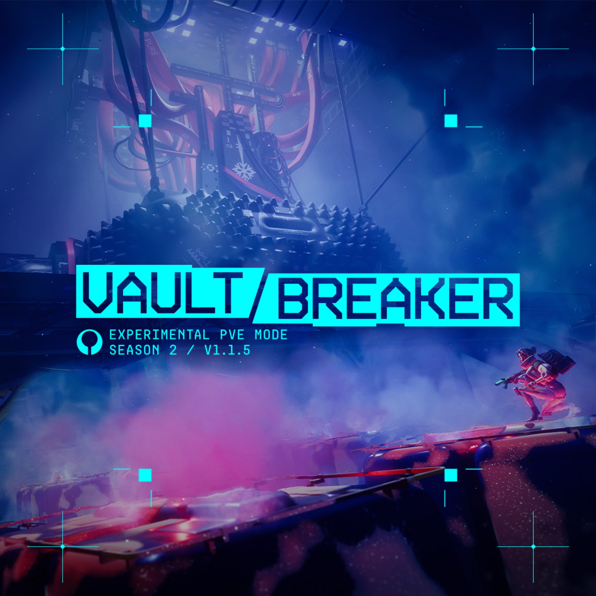

Баланс

Летом и осенью 2026-го Bungie несколько раз правила баланс оружия. Ниже все правки, которые касаются этого каталога; у каждой модели они же стоят датированной пометкой. Где патч-ноуты не дают цифр, мы их не придумываем. canon
- хотфиксV22 Volt Thrower
урон 18 → 12,6
- 1.1.5.2V22 Volt Thrower
урон 12,6 → 14,4, самонаведение затухает до 30% за 1,2 с
- 1.1.5.2KKV-9SD
магазин 23 → 28
- 1.1.5.4V85 Circuit Breaker
ослаблен, цифр нет
- 1.1.5.4Firestorm
первое силовое оружие, событие Ordnance Heist
- 1.1.9.2
- 1.1.9.2
до 24.0718
хотфикс12,6
1.1.5.214,4